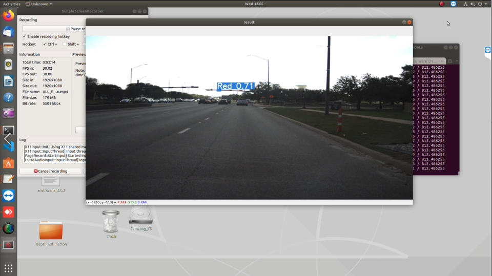
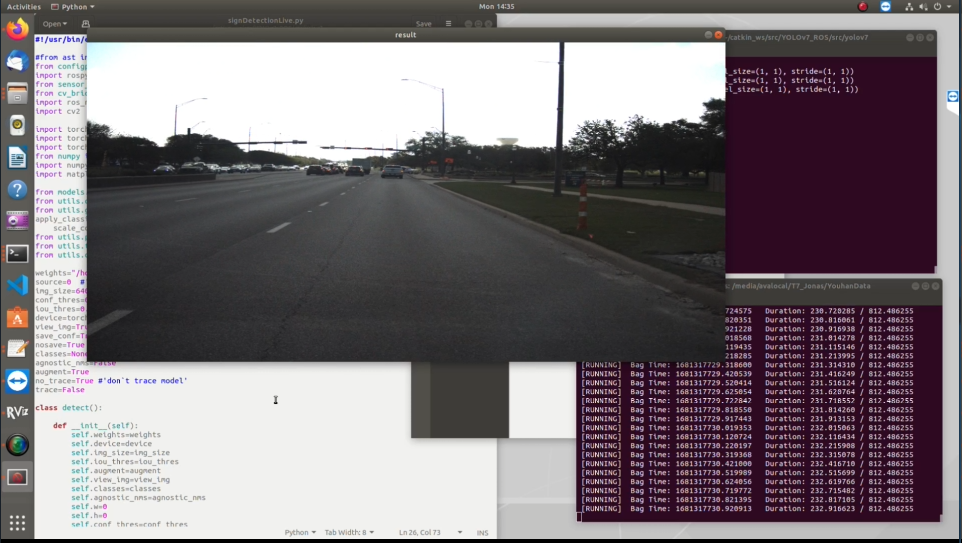

with Improved YOLOv7
June 2023
Advisor: Dr. Reza Langari
자율주행 차량의 안전한 주행을 위해서는 교통 표지판과 신호등의 실시간 인식이 필수적입니다. 그러나 고속 주행 환경에서는 카메라 해상도 저하, 날씨 조건, 원거리 객체 등의 문제로 인해 기존 모델의 정확도가 떨어집니다.
고속 주행 환경
65+ mph에서 해상도 저하
제한된 데이터셋
고품질 데이터셋 부족
클래스 간 혼동
유사 형태 표지판 오분류
환경 변수
직사광선, 그림자 영향
29,978
Images
14
Classes
제한된 데이터셋으로도 높은 정확도를 달성하는 개선된 YOLOv7 모델 제안
활성화 함수 최적화를 통한 Vanishing Gradient 문제 해결
고속 주행 환경에서의 실시간 검출 성능 검증 (ROS)

